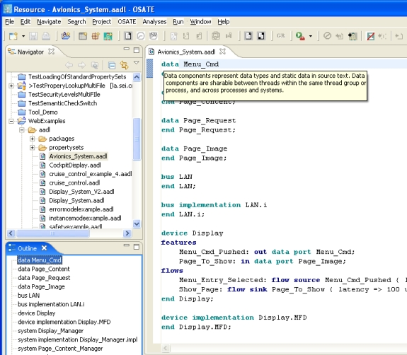

Previous
Next
Previous
Next 
| 5.4 Working With Textual AADL Models |
AADL text files have the “aadl” extension and an icon containing a curly bracket and the letter
“A”. AADL text files can be edited by double clicking on the file name in the “Navigator” view
of Eclipse. This opens the file in the editor window, by default, with the AADL text editor.
Figure 13 shows an open AADL text editor as well as the “Navigator,” “Outline,” and
“Problems” views.
You can also open the file through the context menu by right clicking on the selected file and
selecting one of the editors under “Open With”. This can be a regular text editor or the AADL
text editor. The selected editor becomes the default the editor next time the file is opened by
double clicking. If the file is already open and the “Open With” command is invoked, the file
remains open with the original editor.
Eclipse ensures that only one editor at a time has a file open for modification.
As you edit textual AADL the editor will process the AADL model, report any syntactic errors
and provide basic editing capabilities as well as the new features described above.

Figure 13: Editing an AADL file with the AADL text editor.
The AADL text editor has an “Outline” view (shown on the bottom left in the figure above).
This view shows the top-level component type, component implementation, the component
type and implementation declarations in packages, and the property set declarations. Selection
in the outline view results in navigating the text editor to that construct. If the “Outline” view is
not visible, you can open it through “Windows > Show view > Outline” or find it under “Basic”
in the “Show View” dialog box.
The illustration also shows code completion—in the example offering reserved words—and
hovering presenting context help on the selected reserved word. The “Problems” view shows
syntax errors that are detected by the text editor through automatic parsing. When one of the
error messages is double clicked the text editor navigates to the line that is in error.